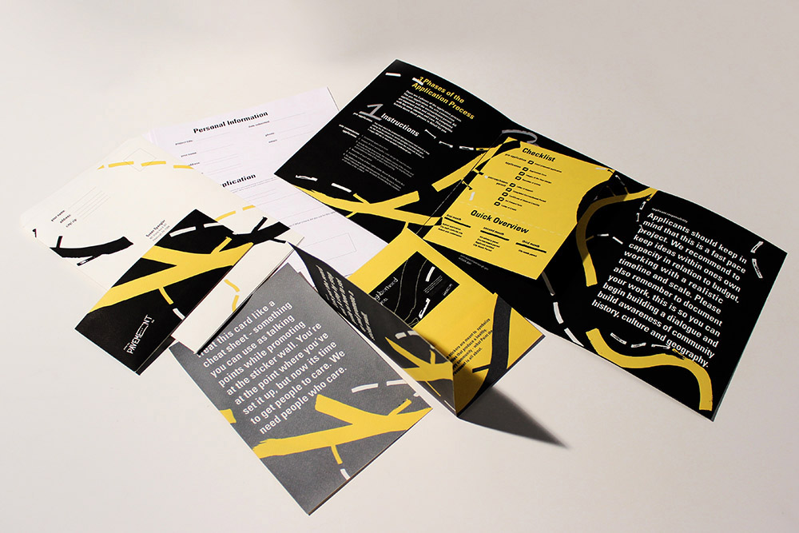
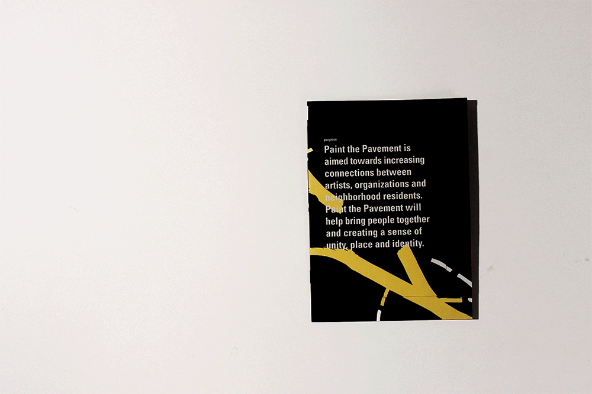

Paint the Pavement is aimed towards increasing connections between artists, organizations and neighborhood residents. Paint the Pavement attempts at bringing people together and creating a sense of unity, place and identity. Paint the Pavement’s purpose is to support public art initiatives that enhance a strong and supportive community. Through art Paint the Pavement hopes to develop public spaces that support the city’s value and create and support neighborhood history.

This project was my first take at a branding/ full system project. We were tasked with designing a series of deliverables that would attract users to the cause, inform them as well as assist them in sending an application to Paint the Pavement.

My system of deliverables begins with a “how to” book - this is how I planned to draw users in, I wanted these packets to be sent to community leaders and people of interest. They would get these in the mail and would set up these “sticker walls” - inspired by Candy Chang; these would then attract others in the neighborhood, which would eventually lead to enough people in the community being aware and wanting to take on the project. The second is a sort of cheatsheet, in our project brief we were given a document with text that we fully had to incorporate into our system. The cheat sheet, related to the first as it provides general context that was given to us, that would assist the user in promoting the concept of Paint the Pavement and its purpose.

The main part of my system is the large pamphlet, which is what holds the majority of the content. Inspired by a map of the Pittsburgh river and of road lines I created a way finding system that related to my watermark and led to the overall branding and identity of the system. The lines lead the users eye through the pamphlet, breaking down information into more digestible pieces.

This project was a struggle in the beginning just due to its vast size and required content, however, creating and branding the system turned out to be a learning curve in my design work. I believe I learnt a lot about the way I work and how to I can better tackle issues, iterate and brainstorm ideas.